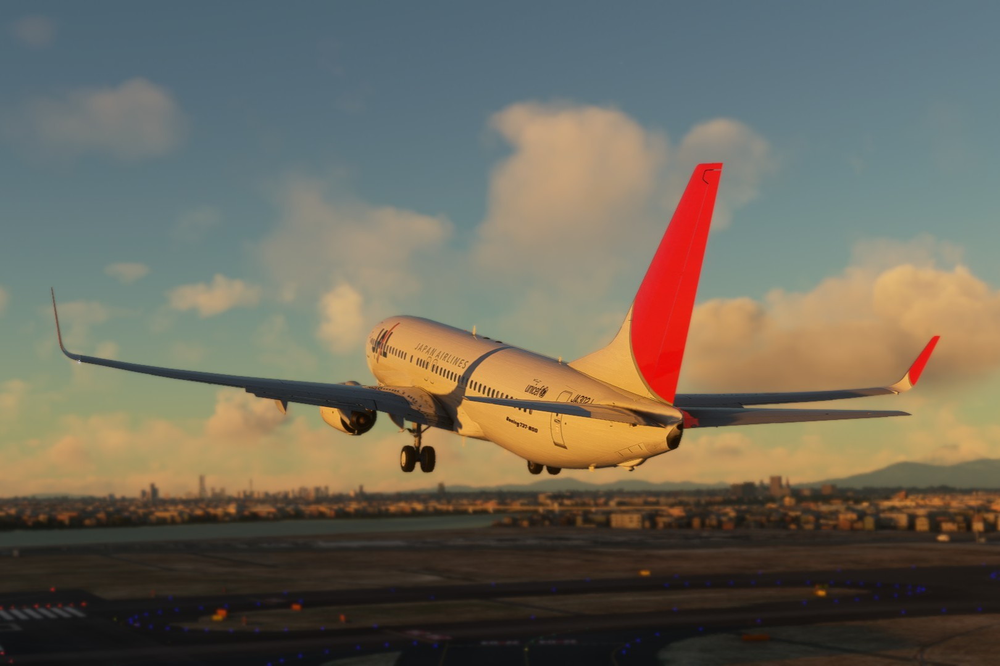
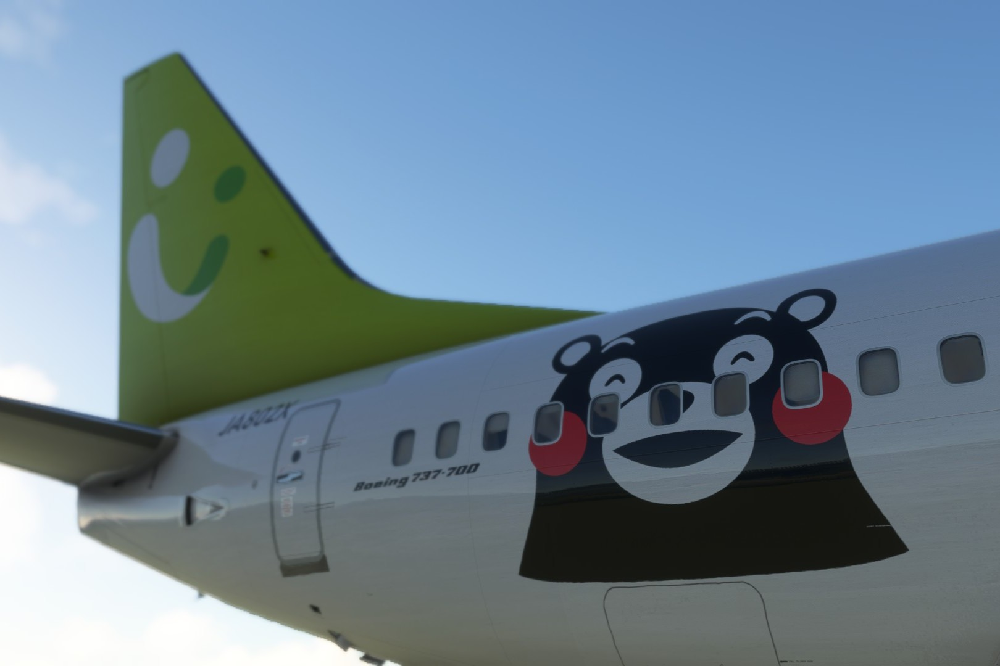
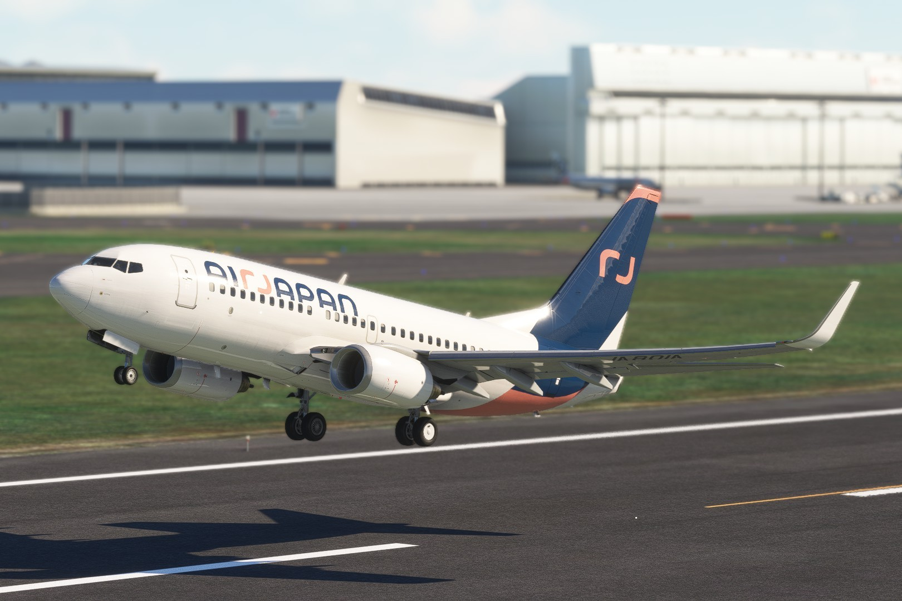

その他
MSFSデータ

PMDG B737-800 Japan Airlines
ダウンロード(flightsim.to)
PMDG B737-800 Japan Airlines
JA302J (2010)
日本航空の旧塗装(サンアーク)を再現しました。 JA302Jを含むすべての機材が鶴丸塗装に変更されたため、現在は使用されていません。

PMDG B737-700 Solaseed Air
ダウンロード(flightsim.to)
PMDG B737-700 Solaseed Air
JA802X くまモンGO! (Fictional)
2013年から2014年にかけて運航されていた、ソラシドエアのくまモンGO!を制作しました。 実際のJA802XはB737-800型機の為、B737-700型機でこの塗装が使用されたことはありません。

PMDG B737-700 Air Japan
ダウンロード(flightsim.to)
PMDG B737-700 Air Japan
JA801A (Fictional)
2024年に就航したANAグループの新ブランド、AirJapnの塗装を制作しました。 実際のJA801AはB787-8型機の為、B737-700型機でこの塗装は使用されていません。 実際の塗装が登場する前に制作したデータのため、実機の塗装と一部相違があります。

ダウンロード(flightsim.to)
PMDG B737-700 Japan Transocean Air
JA10RK / JA8995 (Fictional)
日本トランスオーシャン航空の塗装を制作しました。 日本トランスオーシャン航空はB737-700型を運航していないため、架空の塗装となっています。